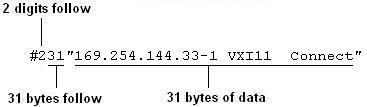
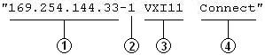

Syntax | Description | Parameters | Remarks | Return Format | Example
SYSTem:COMMunicate:LAN:HISTory?
This command returns a record of all LAN session connections and disconnections.
To clear the LAN connection history queue, use the SYSTem:COMMunicate:LAN:HISTory:CLEar command.
The command returns the LAN connection history in Definite-Length Block format. The syntax is a pound sign (#) followed by a non-zero digit representing the number of digits in the decimal integer to follow. This digit is followed by a decimal integer indicating the number of 8-bit data bytes to follow. This is followed by a block of data containing the specified number of bytes.
For example:
|
 |
Here
is an example of a single connection record, enclosed in quotes:
|
 |
|
|
1 IP Address |
3 Session
Type (LAN, SOCKets, |
|
2 Session Number
|
4 Connect/Disconnect Status |
Each connection record is enclosed in quotes and multiple responses are separated by commas.
If the connection history has been cleared, this command returns "#10" (the null response).
The following query returns the LAN connection history.
SYST:COMM:LAN:HIST?
Typical Response:
#3135"169.254.149.35-1 VXI11 Connect","169.254.149.35-2
VXI11 Connect","169.254.149.35-1 VXI11 Disconnect","169.254.149.35-2
VXI11 Disconnect"